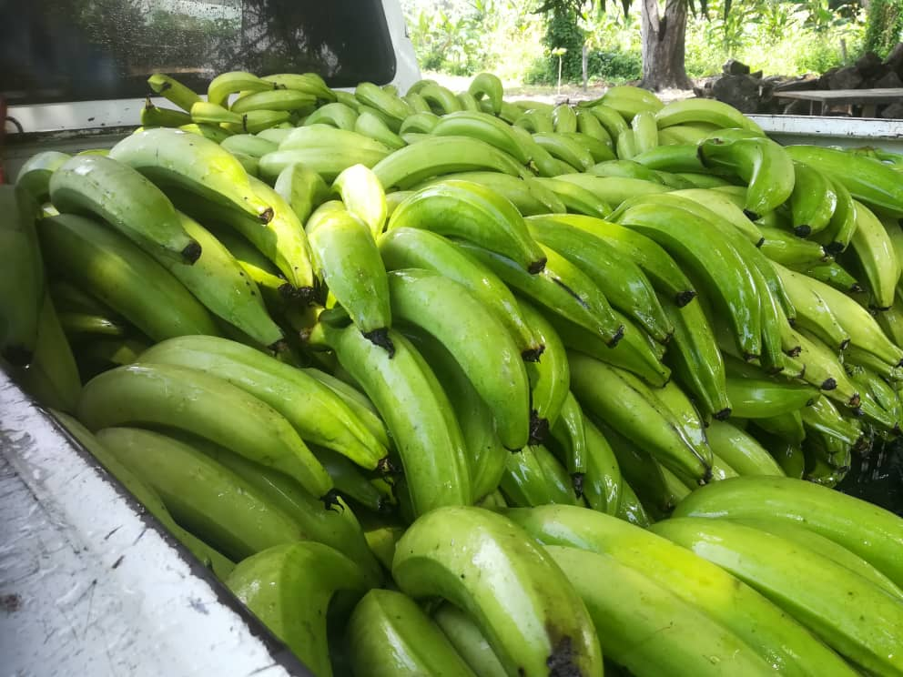

<div class="container marketing">
  
    <div class="row featurette">
        <div class="col-md-7">
          <h2 class="featurette-heading tutulo">HARTÓN.</h2>
          <p class="lead text-justify">Se le conoce técnicamente como Musa AAB Plátano cv 
            Hartón y constituye la variedad de mayor cultivo en Venezuela. Es una planta de unos 6 metros de altura, se caracteriza por ser un fruto grande y robusto de cáscara gruesa. Esta variedad se cultiva principalmente en alturas entre 1 y 1000 m.s.n.m. y la planta produce racimos con 4 a 6 manos con 20 a 25 dedos. El peso medio de los racimos es de 10 kilos.</p>

            <p class="lead text-justify">

              <strong>Fruta verde Peso medio por unidad:</strong>  260g. <br>
              <strong>Cantidad media por mano:</strong>  25 unidades. <br>
              <strong>Empaque:</strong> Caja de 3 manos. <br>
              <strong>Tiempo medio de maduración:</strong> A solicitud del comprador.<br>

            </p>


        </div>

        <div class="col-md-5 order-md-3">
            <br><br><br><br><br><br>
            </img>
          </div>
      </div>
  

</div>
